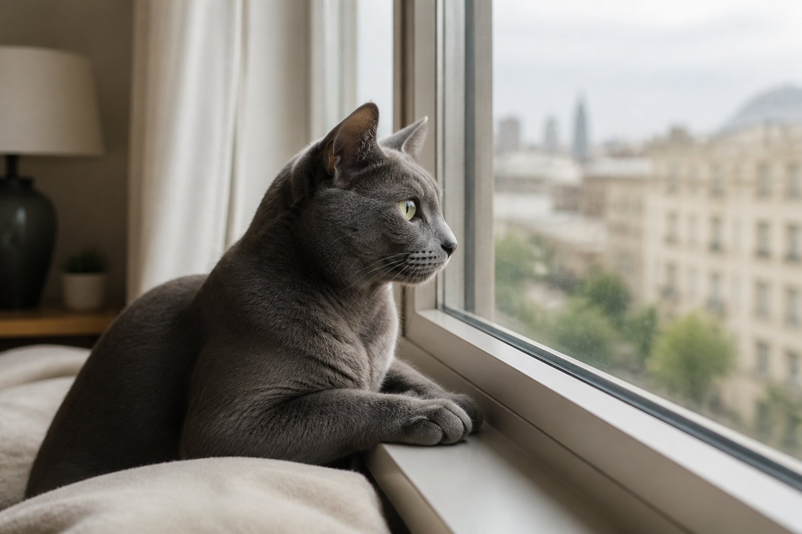
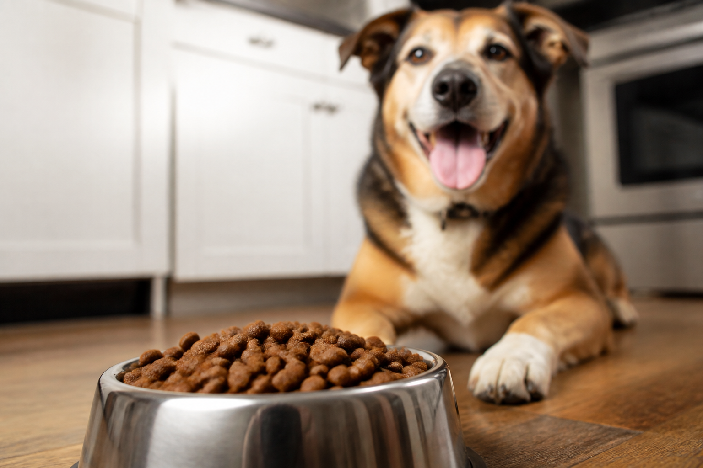
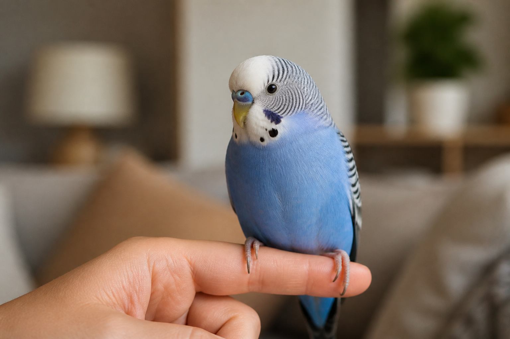

Salud
Leishmaniasis: cómo leer las alertas sin entrar en pánico
Qué está pasando en el norte del país y qué conviene preguntarle a tu vet.
Noticias · datos curiosos · Argentina
Un medio amable para leer, entender y después encontrar un comercio de confianza. Arrancamos por las notas. El mapa de veterinarias viene después.

Qué está pasando en el norte del país y qué conviene preguntarle a tu vet.
Un recuento de ordenanzas recientes y por qué todavía no hay un listado único.

Proteína, origen y letras chicas. Una guía corta, sin recetar marcas.

Por qué un silbido de la casa termina en el repertorio del animal.
También aparece cuando se calman, se lastiman o piden contacto.
Lo que se sabe del sueño REM canino, en criollo y sin mito.
Una guía corta: teléfonos, qué llevar y cómo no confundir este medio con un consultorio. El directorio con mapa llega cuando haya fichas reales.
Vamos a listar clínicas y comercios de terceros. Mascotas Argentinas no atiende ni da turnos: te ayuda a encontrarlos. Primero, el AMBA con fichas de verdad.
Avisame cuando esté